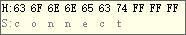

获取串口屏设备唯一序列号
提示
设备唯一序列号是每个串口屏出厂时由厂家烧录在芯片内的唯一标识码，类似于电脑的CPU序列号或者手机的IMEI码，可以用来区分每一台设备。
传统方法只能通过串口获取到芯片的唯一序列号,串口屏自身无法获取到序列号,所有系列所有型号都支持
通过串口获取
单片机或者电脑向串口屏发送联机指令:connect+结束符
发送的数据如下所示:

此时串口屏会返回一串数据
以TJC4024T032_011R设备为例，设备返回如下8组数据(每组数据逗号隔开):
comok 1,101-0,TJC4024T032_011R,52,61488,D264B8204F0E1828,16777216
comok:握手回应
1:表示带触摸(0是不带触摸)
101-0:设备内部预留数据-设备地址
TJC4024T032_011R:设备型号
52:设备固件版本号
61488:设备主控芯片内部编码
D264B8204F0E1828:设备唯一序列号
16777216:设备FLASH大小(单位：字节)
新方法-通过指令获取
注意
新方法仅T1系列和X系列支持,允许串口屏通过指令获取到设备唯一序列号,需要1.65.1以上版本的上位机
注意
新方法仅支持在实物屏幕上使用,在模拟器中无法获取
1,新建一个文本控件t0。长度可以长一些，比如200字节，长度过短会读取失败，导致文本控件一片空白。
2.写代码“getv t0.txt”
这个命令会把串口发connect命令返回的所有数据装到t0.txt中
此时就可以通过spstr指令将设备唯一序列号截取出来
spstr t0.txt,t1.txt,”,”,5
获取设备唯一序列号例程下载
演示工程下载链接：